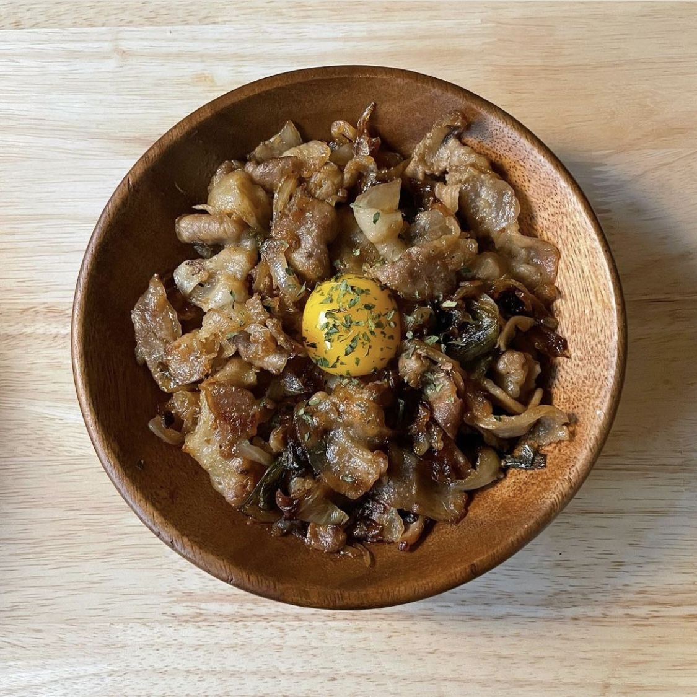

부타동

준비물
대패삼겹살 200g
양파 반 개
간장 1.5큰술
맛술 1큰술
설탕 1큰술
다진마늘 1작은술
계란 한 개
밥
양파를 채 썬다.
간장, 맛술, 설탕, 다진마늘로 양념장을 만든다.
프라이팬에 대패삼겹살, 설탕 1큰술을 넣고 볶아준다.
설탕이 다 녹으면 양파와 양념장을 넣고 볶는다.
다 익으면 밥에 올리고 가운데에 노른자를 1개 올린다.
완성!